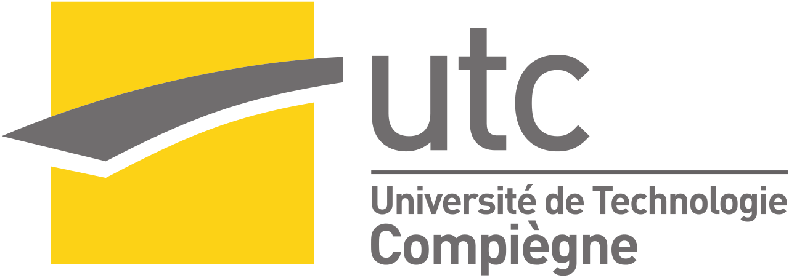
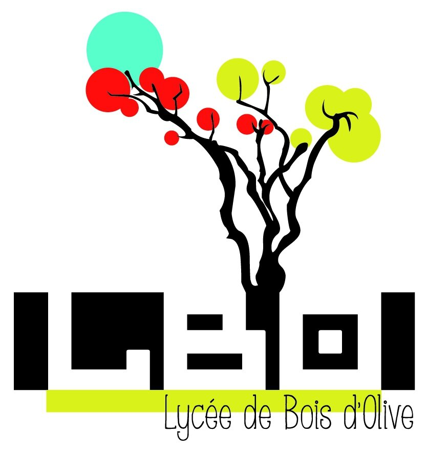
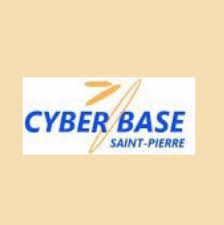

Fabien AMOURANI
BUT Réseaux & Télécommunications — 1ère année
Étudiant en Réseaux & Télécommunications, intéressé par l’administration systèmes et réseaux, la cybersécurité et les projets techniques, avec une approche orientée pratique, et souhaitant approfondir ces domaines dans le cadre d’une alternance.
Compétences techniques
Systèmes
Développement
Cybersécurité
Parcours académique
BUT Réseaux & Télécommunications — 1ʳᵉ année (en cours)
2025–2028Formation orientée vers l’acquisition des compétences fondamentales en réseaux et systèmes, visant à préparer à des fonctions techniques en administration et exploitation informatique. Elle aborde notamment la configuration de réseaux locaux (VLAN, commutation, routage), l’administration de systèmes Linux et les bases de la programmation en C.
Les projets et travaux pratiques (SAE, TP) permettent de mettre en application concrète les notions étudiées, de développer une méthode de travail rigoureuse et d’adopter une approche structurée face à des problématiques techniques proches de situations professionnelles.
IUT de La Réunion — Saint-Pierre

Classe préparatoire au diplôme d’ingénieur
2024–2025Année de classe préparatoire suivie au sein d’une école d’ingénieurs reconnue pour son exigence académique, avec une orientation initiale vers le génie informatique. Cette formation a été marquée par un rythme de travail soutenu, favorisant le développement de la rigueur, de l’organisation et de la méthode de travail.
Cette expérience m’a permis de mieux définir mon projet professionnel et a conduit à une réorientation réfléchie vers une formation davantage orientée vers la pratique, en cohérence avec mes objectifs dans les domaines des réseaux et des systèmes.
Université de Technologie de Compiègne — Compiègne

Baccalauréat général — Mention Très Bien
2024Spécialités Numérique et Sciences Informatiques, Mathématiques et Anglais Monde Contemporain, ayant permis d’acquérir des bases en programmation, en raisonnement mathématique et en communication en anglais, utiles pour la poursuite d’études dans le domaine du numérique.
Lycée de Bois d'Olives — Saint-PierreExpériences professionnelles

Stage en accompagnement numérique
Cyberbase de la Ravine Des Cabris — 2021- Contexte : Accueil et accompagnement du public au sein d’une cyberbase municipale, dédiée à l’accès aux outils numériques et aux services informatiques de base.
- Actions : Assistance aux usagers (prise en main des postes, logiciels courants), préparation et mise en service de PC (installation de base, vérifications), aide à l’impression et au paramétrage simple de périphériques, conseils de premier niveau et sensibilisation aux bonnes pratiques (dont cybersécurité).
- Résultats : Première expérience en environnement professionnel. Développement de compétences relationnelles (accueil, écoute, pédagogie) et techniques de premier niveau (préparation de postes, assistance utilisateur, gestion d’impressions et périphériques). Renforcement de l’autonomie et de l’organisation du travail.
Formations et certifications complémentaires
PSC1
Prévention et Secours Civiques de niveau 1
Formation aux gestes de premiers secours.
MOOC ANSSI
Sensibilisation à la cybersécurité
Bonnes pratiques et protection des systèmes.
freeCodeCamp
Développement web
HTML, CSS, bases JavaScript.
En coursCisco Networking Academy
Fondamentaux réseaux
Protocoles, équipements, réseaux.
En coursSoft skills
Qualités
- Rigueur
- Esprit d’équipe
- Curiosité technique
- Persévérance
- Capacité d'adaptation
Méthode de travail
- Organisation (checklists / planning)
- Communication (compte-rendus, synthèses)
- Analyse et résolution de problèmes
- Apprentissage autonome
Passions / hobbies
Informatique
Appétence personnelle orientée vers la veille technologique et l’expérimentation, incluant l’exploration de nouveaux outils numériques et la réalisation de projets simples. Développement de la curiosité technique, de l’autonomie et de la capacité à comprendre le fonctionnement des logiciels et du matériel informatique.
Jeux vidéo
Pratique régulière de jeux orientés stratégie et réflexion, impliquant analyse de situations, prise de décision et optimisation des actions. Développement de la logique, de l’esprit d’analyse et de la capacité à résoudre des problèmes dans des environnements complexes.
Skate
Pratique sportive régulière reposant sur la répétition et la progression par objectifs. Développement de la persévérance, de la gestion de l’échec, de la discipline personnelle et de la capacité à s’inscrire dans un effort sur le long terme.
Piano
Pratique autodidacte depuis plus de trois ans, nécessitant assiduité, régularité et capacité d’apprentissage autonome. Développement de la concentration, de la rigueur et de la persévérance à travers un travail progressif et structuré.